R¶
R is a popular language for data analysis and visualization. Different versions are available as software modules and we provide the graphical interface RStudio for R through our Open OnDemand web interface.
Similar to other languages that use package managers to install libraries contributed by the user community, we recommend you create and manage your own local libraries in your account. This ensures a stable global environment for all users and that you have the most control over your packages' versions and dependencies.
We provide instructions below for how to create, use, and switch between libraries as well as some debugging techniques for when package installations fail.
RStudio is a popular method for running analyses (and for good reason!), but for longer-running jobs (say, many hours or days) or workflows that need more flexibility in their environment (e.g., need access to software installed as system modules such as gdal), we recommend batch submissions.
Creating a Custom Library¶
R Package Debugging
R packages can be finicky. See Switching Between Custom Libraries and Common Problems below to help with frequent user issues. Alternatively, you can consider using Mamba to manage your R packages.
Creating your first library
-
Make a local directory to store your packages. It's recommended to include information about your library in the name, e.g., which version of R you're using. It's important to maintain a consistent version of R with your libraries since installing packages into one library with multiple versions or R will often cause trouble. Need to switch versions of R? Creating a new library will help.
mkdir -p ~/R/library_4.2 -
Tell R where your library is by creating an environment file
The fileecho 'R_LIBS=~/R/library_4.2/' >> ~/.Renviron~/.Renvironis a "dot" file which means it does not show up when you run a standardls. This particular file can be used to control your R environment for each subsequent time you start a session. All theechocommand does is append the lineR_LIBS=~/R/library_4.2/to this file. -
That's it! Now you can install packages and they will be stored in the directory you just created. For example, to install and load the package
ggplot2:module load R/4.2 R install.packages("ggplot2")
Switching Between Custom Libraries¶
If you're switching versions of R, we recommend you use a different library. See Common Problems below for more information. When creating a library, consider including pertinent information in the name such as R version. For example, if you were previously using R 4.2 and wanted to switch to using R 4.1, you could create a directory called library_4.1 using:
mkdir -p ~/R/library_4.1
~/.Renviron file using a text editor such as nano:
nano ~/.Renviron
R_LIBS previously defined in your file to the name and location of your new library. In this case, this would look like:
R_LIBS=~/R/library_4.1
nano, use Ctrl+X and save at the prompt. Once your file is saved, you're ready to start installing files into your new library.
Common Problems and How to Debug Them¶
Working on a cluster without root privileges can lead to complications. For general information on package installations, see the r-bloggers documentation. For information on common installation problems on our clusters, see the section below with with suggested solutions:
One common reason R packages won't install is an altered environment. This can frequently be caused by the presence of Anaconda (or Miniconda) installed locally or initialized in your account from our system module.
We have instructions on how to remove Anaconda from your environment in our Anaconda documentation.
If Anaconda is not initialized in your account, there might be other culprits that are corrupting your environment.
Look for any of the file types listed below on your account. If you find them, try removing them (make a backup if you need them) and try the installation again.
- Saved R sessions. If this is the case, after starting a session, you will get the message
[Previously saved workspace restored]. Old sessions may be saved as a hidden file.RDatain your home directory. Alternatively, they may be stored under~/.local/share/rstudio. Where old sessions are stored is dependent on the version of R you are using. - Gnu compilers
- Windows files
Have you set up a custom library? Are you switching between custom libraries? You may want to check that everything is being loaded from the correct location and that there are not multiple or unwanted libraries being used.
Double-check that you have an .Renviron file. This is a hidden file located in your home directory and should set the path to your custom R library. If you do not have a custom library name set up, R will create one for you saved as something like:
~/R/x86_64-pc-linux-gnu-library
To set up/switch custom libraries, follow the instructions in the Creating a Custom R Library section above.
Because HPC is a cluster where multiple versions of R are available, users should take care to avoid mixing and matching. Because packages often depend on one another, libraries using different versions of R can turn into a tangled mess. Common errors that can crop up include: Error: package or namespace load failed.
If you're switching R versions and have a custom library defined in your ~/.Renviron file, we recommend creating a new library.
RStudio is a great tool! Sometimes though, because it's a different environment than working directly from the terminal, you may run into problems. Specifically, these typically arise for installs or when using packages that rely on software modules.
Package Installations
If you're trying to install a package in an OOD RStudio session and you've tried all the troubleshooting advice in the other tabs without luck, try starting R in the terminal and give the installation another try. You can access an R session in the terminal by first starting an interactive session, then using:
$ module load R/<version>
$ R
> install.packages("package_name")
Accessing Modules
RStudio does not natively have access to module load commands. This means that if you have a package that relies on a system module, the easiest option is to work through an interactive terminal session or to submit a batch script.
The alternative is to create a hidden directory in your account called ~/.UAz_ood/rstudio.sh with the module load commands you need. More information on this can be found in the section Loading Modules in RStudio below.
Font Issues
RStudio uses Apptainer under the hood. As a result, there are some environment differences that may affect correct font formatting in images generated in RStudio. If you are experiencing this, add the following line to the hidden file ~/.Renviron in your account (you can create this file if it does not exist):
FONTCONFIG_PATH=/opt/ohpc/pub/apps/fontconfig/2.14.2/etc/fonts
Using RStudio¶
Jupyter
R is one of the core languages that Jupyter supports. You can also use Jupyter as an alternative GUI to RStudio. For more information, see Mamba.
We provide access to the popular development environment RStudio through our Open OnDemand web interface. This is a very handy tool, though it should be noted that it is a less flexible environment than using R from the command line. This is because RStudio sets its own environment which prevents easy access to third party software installed as system modules. These issues can sometimes worked around by following the guide in the debugging section above.
In some circumstances, you may want to run RStudio using your own Apptainer (rebranded from Singularity) image. For example, this allows access to different versions of R not provided when using our OOD application. We have some instructions on one way to do this below.
First, log into HPC using an Open OnDemand Desktop session and open a terminal. A Desktop session is the easiest solution to access RStudio since it eliminates the need for port forwarding.
In the terminal, make an RStudio directory where all of the necessary files will be stored. In this example, we'll be working in our home directory and will pull an RStudio image from Dockerhub to use as a test. If you're interested, you can find different RStudio images under rocker in Dockerhub.
mkdir $HOME/RStudio
cd $HOME/RStudio
apptainer pull ./geospatial.sif docker://rocker/geospatial.sif
Next, create the necessary directories RStudio will use to generate temporary files. You will also generate a secure cookie key.
TMPDIR=$HOME/RStudio/rstudio-tmp
mkdir -p $TMPDIR/tmp/rstudio-server
uuidgen > $TMPDIR/tmp/rstudio-server/secure-cookie-key
chmod 600 $TMPDIR/tmp/rstudio-server/secure-cookie-key
mkdir -p $TMPDIR/var/{lib,run}
Next, create a file in your RStudio directory called rserver.sh and make it an executable:
touch rserver.sh
chmod u+x rserver.sh
USER OPTIONS to match your account if necessary. You can change PASSWORD to any password you'd like to use. Once you've entered the contents, save and exit:
#!/bin/bash
# --- USER OPTIONS --- #
WD=$HOME/RStudio
SIFNAME=geospatial.sif
PASSWORD="PASSWORD"
# --- SERVER STARTUP EXECUTED BELOW --- #
NETID=$(whoami)
TMPDIR=$WD/rstudio-tmp
SIF=$WD/$SIFNAME
PASSWORD=$PASSWORD apptainer exec -B $TMPDIR/var/lib:/var/lib/rstudio-server -B $TMPDIR/var/run:/var/run/rstudio-server -B $TMPDIR/tmp:/tmp $SIF rserver --auth-none=0 --auth-pam-helper-path=pam-helper --server-user=$NETID --www-address=127.0.0.1
Now, in your desktop session's terminal, execute the rserver.sh script using ./rserver.sh
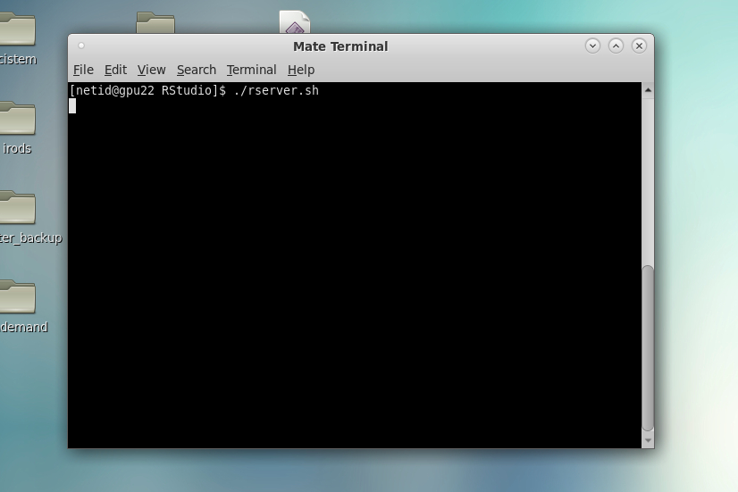
Next, open a Firefox window and enter localhost:8787 for the URL. In your browser, you will be prompted to log into your RStudio server. Enter your NetID under Username. Under Password, enter the password you defined in the script server.sh.
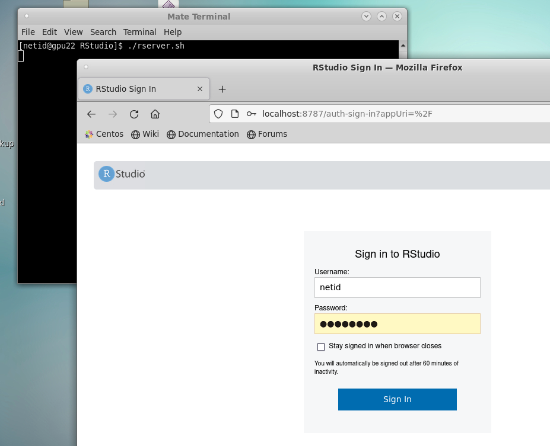
This will open your RStudio session:
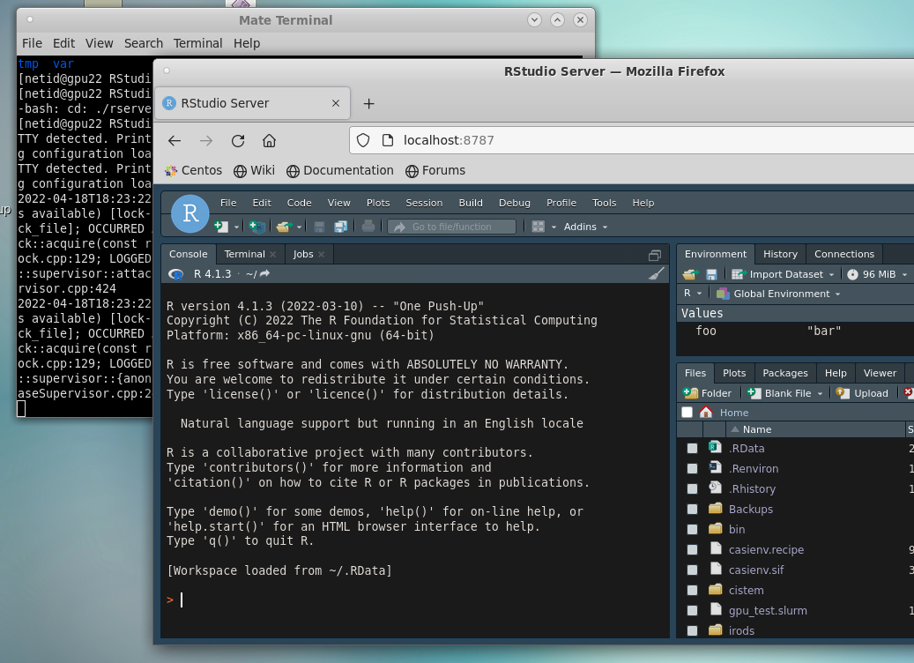
Loading Modules in RStudio (New!)¶
Library installations still must be performed on the command line
The method detailed below is used to faciliate loading R libraries in RStudio when they depend on system software modules. R library installations will still need to take place in an interactive session on the command line. (1)
- This is because the container that is necessary to start RStudio overrides environment variables set by modules that are necessary for successful library compilations.
If you are using the RStudio application in Open OnDemand, it is now possible to load additional software modules into your environment. You might want to do this if your R libraries depend on modules. An example of this might be the Seurat package which depends on the modules gdal, proj, sqlite3, and geos.
Method to Load Modules
To load modules, you will need to create a hidden directory in your home called ~/.UAz_ood. Inside that directory, create a file called rstudio.sh. You can then add any module load statements you need to this file. The file rstudio.sh is sourced when your RStudio session initiates, so if you modify your the file, you will need to start a new RStudio session for the changes to take effect.
An example of how to create this file with example contents is shown below.
Example
This example assumes you are working on the command line. Start by first creating the necessary directory and file:
mkdir -p ~/.UAz_ood
touch ~/.UAz_ood/rstudio.sh
rstudio.sh in your favorite text editor. If you are not familiar with command line text editors, a beginner-friendly tool is nano. For example:
nano ~/.UAz_ood/rstudio.sh
module load gdal/3.8.5 geos/3.9.5 proj/9.4.0 sqlite/3.45
Now, save and exit. If you're using nano, you can do this with Ctrl+X, then select Y to save your changes and exit. Once your file exists with the desired contents, start an new OnDemand RStudio session.
Setting a New User State Directory¶
When working on a large project in RStudio, it is possible for your R session's data to fill up your home directory resulting in out-of-space errors (e.g. when trying to edit files, create new OOD sessions, etc). With the newest version of RStudio, you can find these saved session files under ~/.local/share/rstudio.
To preserve space in your home, you can specify a different directory by setting the environment variable RSTUDIO_DATA_HOME. To do this, open the hidden file ~/.bashrc and add:
export RSTUDIO_DATA_HOME=</path/to/new/directory>
where </path/to/new/directory> is the path to a different location where you have a larger space quota. For example, /groups/<YOUR_PI>/<YOUR_NETID>/rstudio_sessions.
Setting Your Working Directory¶
If you'd like to change your working directory in an RStudio session, one option is to use setwd("/path/to/directory") in your terminal. Alternatively, if you'd like to see the contents of your new workspace in your file browser, you can navigate to the Session dropdown tab, navigate to Set Working Directory, and click Choose Directory...
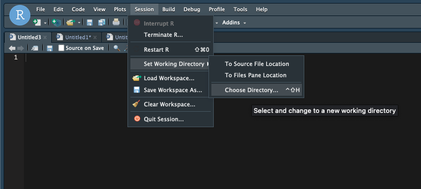
From there, either navigate to the desired subdirectory, or click the ellipsis ... in the upper right to enter the full path to a directory.
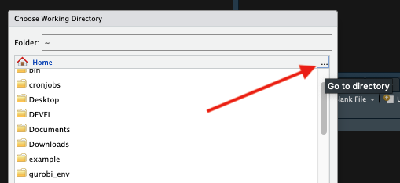
Once you click OK and then Choose in the main file navigation window, R will change its working directory and you should see the contents of your new space under the Files browser in the lower right.
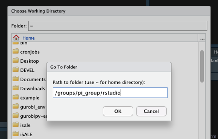
If you'd like to permanently set a different default working directory for all non-project RStudio sessions, navigate to the Tools dropdown tab and select Global Options...
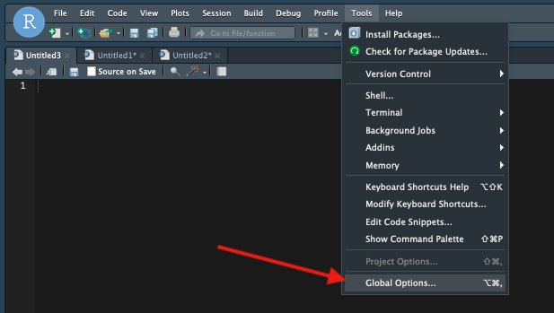
This will open a menu where you can set your default working directory under General. Click the Browse... button to open a file navigator
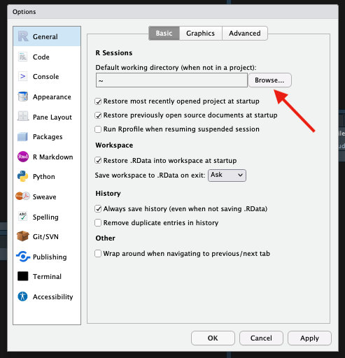
To select a new working directory, either navigate to the subdirectory of your current working space, or select the ellipsis ... in the upper right to allow you to enter the full path.
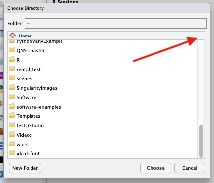
The ellipsis option allows for more flexibility such as pointing to an /xdisk or /groups space.
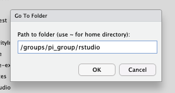
Next, click OK, then Choose in the Choose Directory window, then Apply in the Global Options menu. This will set your working directory for your current session as well as all future sessions.
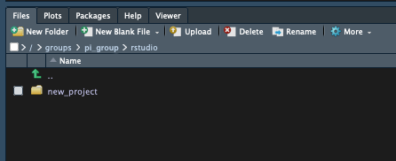
Popular Packages¶
Below, we document some installation instructions for common R packages. We attempt to keep these instructions reasonably up-to-date. However, given the nature of ongoing software and package updates, there may be discrepancies due to version changes. If you notice any instructions that don't work, contact our consultants and they can help.
Alternative installation
The instructions below show how you can install these packages with the R modules described above. An alternative is to install these packages in a Conda environment with a package manager like Mamba. For more information, see Mamba.
R Studio Version
If you use RStudio for your analyses, make sure that you load the same version of R when working with modules on the command line.
Anaconda must be removed from your environment
You will need to make sure Anaconda is completely removed from your environment prior to the install. If you have Anaconda initialized in your account, see the code block on our Anaconda page under Removing Anaconda From Your Environment --> Temporary Removal.
Installs must be done in a terminal
To install Seurat and SeuratDisk, you'll need to be in an interactive terminal session and not in an RStudio session. Once your installation is successful, it is possible to load these modules in RStudio. More details are provided below.
(elgato) [netid@junonia ~]$ interactive -a <your_group>
[netid@cpu38 ~]$ module load R/<version>
[netid@cpu38 ~]$ module load gdal/3.3.2 glpk/5.0 libpng/1.6.37 # software modules that are needed for Seurat's dependencies
[netid@cpu38 ~]$ R
> install.packages("Seurat")
If you want to load this software in an RStudio session, you will need to create the file ~/.UAz_ood/rstudio.sh. See the Loading Modules in RStudio section above for more information.
SeuratDisk is similar to Seurat with a few more dependencies. It also includes the line unset CPPFLAGS due to a reported issue with the dependency hdf5r:
(elgato) [netid@junonia ~]$ interactive -a <your_group>
[netid@cpu1 ~]$ module load R/<version> gdal/3.3.2 geos/3.9.1 hdf5/1.10.5 libpng/1.6.37 glpk/5.0 libgit2/1.8.1
[netid@cpu1 ~]$ unset CPPFLAGS
[netid@cpu1 ~]$ R
> install.packages("Seurat")
> install.packages("remotes")
> remotes::install_github("mojaveazure/seurat-disk")
If you want to load this software in an RStudio session, you will need to create the file ~/.UAz_ood/rstudio.sh. See the Loading Modules in RStudio section above for more information.
R Studio Version
If you use RStudio for your analyses, make sure that you load the same version of R when working with modules on the command line.
Installs must be done in a terminal
To install Monocle3, you'll need to be in an interactive terminal session and not in an RStudio session. Once your installation is successful, it is possible to load these modules in RStudio. More details are provided below.
Anaconda must be removed from your environment
You will need to make sure Anaconda is completely removed from your environment prior to the install. If you have Anaconda initialized in your account, see the code block on our Anaconda page under Removing Anaconda From Your Environment --> Temporary Removal.
Monocle3's documentation includes steps that you can use for a successful installation.
(elgato) [netid@junonia ~]$ interactive -a your_group
[netid@cpu1 ~]$ module load R/<version> gdal/3.3.2
[netid@cpu1 ~]$ R
> install.packages("BiocManager")
> BiocManager::install(c('BiocGenerics', 'DelayedArray', 'DelayedMatrixStats',
'limma', 'lme4', 'S4Vectors', 'SingleCellExperiment',
'SummarizedExperiment', 'batchelor', 'HDF5Array',
'terra', 'ggrastr'))
> install.packages("remotes")
> remotes::install_github('cole-trapnell-lab/monocle3')
Then, to load Monocle3 in RStudio, you will need to create the file ~/.UAz_ood/rstudio.sh as detailed in the Loading Modules in RStudio section above.
R Studio Version
If you use RStudio for your analyses, make sure that you load the same version of R when working with modules on the command line.
Installs must be done in a terminal
To install Monocle3, you'll need to be in an interactive terminal session and not in an RStudio session. Once your installation is successful, it is possible to load these modules in RStudio. More details are provided below.
Anaconda must be removed from your environment
You will need to make sure Anaconda is completely removed from your environment prior to the install. If you have Anaconda initialized in your account, see the code block on our Anaconda page under Removing Anaconda From Your Environment --> Temporary Removal.
To install the R package terra, you will need to load the module gdal which will pull in other dependencies (geos, proj, and sqlite). In this example, we'll use the modules R/4.3 and gdal/3.8.5
(elgato) [netid@junonia ~]$ interactive -a <your_group>
[netid@cpu1 ~]$ module load R/<version> gdal/3.8.5
[netid@cpu1 ~]$ R
> install.packages("terra")
~/.UAz_ood/rstudio.sh as detailed in the Loading Modules in RStudio section above.
Example Jobs¶
Specify your R version
Note that it's always a good idea to explicitly specify the version of R you want to use when loading an R module in a batch script. When modules are updated, the default changes to the most recent version. This may create conflicts and library issues. Always specifying your R version is a good way to ensure a consistent environment.
Batch job basics
The examples below assume a basic familiarity with batch scripts. If you've never submitted a batch script before, check out our Introduction to Batch Jobs for a comprehensive walkthrough.
Below are some examples on how to submit R analyses as batch jobs. R jobs may also be run using interactive terminal sessions or using RStudio through Open OnDemand.
To run an R job as a batch submission, you can include all of your R commands in a single file and execute it with the command Rscript.
R Script
To start, we'll create a simple R script that will print the line Hello World!. We'll call this script hello_world.r and can create it using the command touch:
[netid@wentletrap ~]$ touch hello_world.r
#!/usr/bin/env Rscript
hello_string <- "Hello World! "
print (hello_string, quote=FALSE)
Slurm Script
To call this R script in a batch submission, we'll load the R version we'd like to use and then execute our workflow with the command Rscript hello_world.r. Create a batch submission file using the same method as before,touch submit_r_script.slurm, and open it in your favorite text editor. Then, in your Slurm submission file, add the following:
#!/bin/bash
#SBATCH --job-name=R-Plotting-Job
#SBATCH --ntasks=1
#SBATCH --nodes=1
#SBATCH --time=00:01:00
#SBATCH --partition=standard
#SBATCH --account=YOUR_GROUP
module load R/4.0.0
Rscript hello_world.r
Submitting your job
To run the batch job, submit it to the scheduler using the command sbatch followed by the Slurm file’s name. This will return a job ID that you can use to track the status of your job. In this case:
[netid@wentletrap ~]$ sbatch submit_r_script.slurm
Submitted batch job 53341
Output
An output file will be generated by the scheduler containing any output that would have been printed to the terminal had you run your batch script interactively.
[netid@wentletrap ~]$ cat slurm-53341.out
[1] Hello World!
Creating and saving figures as a part of your workflow is possible in a batch script. You can save your figure to a specified directory (the default is your working directory), give it a custom name, control your image quality and dimensions, and choose your output format (e.g., pdf, png, jpg, etc.). An example is included below.
RScript
To start, we'll write an R script that will create a sinusoidal plot. We'll call this script example.r and can create it using the command touch:
[netid@wentletrap ~]$ touch example.r
Now open the text file in your favorite editor and add the following:
print ("In R Script. Plotting...")
x <- seq(-pi,pi,0.1)
png("rplot.png")
plot(x, sin(x))
dev.off()
In the example above, we're using png("rplot.png") to save our output figure to png format rather than displaying the image interactively and the dev.off() closes the file after it is generated.
Batch Script
Next, we'll create our submission file using touch submit_r_script.slurm and add the contents:
#!/bin/bash
#SBATCH --job-name=R-Plotting-Job
#SBATCH --ntasks=1
#SBATCH --nodes=1
#SBATCH --time=00:01:00
#SBATCH --partition=standard
#SBATCH --account=YOUR_GROUP
module load R/4.0.0
Rscript example.r
The command RScript is used to execute our R script in batch mode allowing it to be run non-interactively.
Job Submission
Next, we'll submit our job using sbatch:
[netid@wentletrap ~]$ sbatch submit_r_script.slurm
Submitted batch job 53337
Output
Once our job has completed, we should see both a Slurm output file which contains any text that would have been printed to the terminal had we run our commands interactively, as well as the image file we specified.
[netid@wentletrap ~]$ ls
slurm-53337.out rplot.png example.r submit_r_script.slurm
[netid@wentletrap ~]$ cat slurm-53337.out
[1] "In R Script. Plotting..."
null device
1
rplot.png should be:
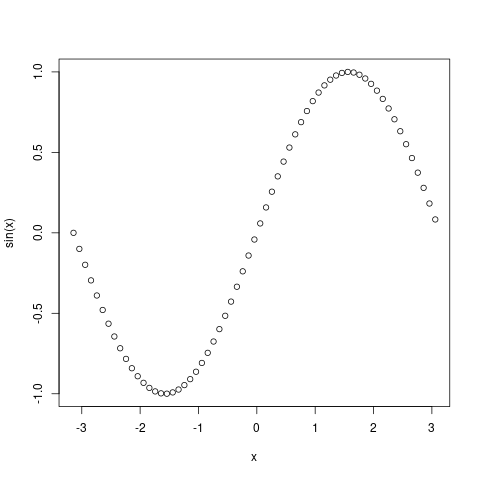
Array Jobs Intro
Unsure what an array job is? See our Array Jobs documentation which provides in-depth information on their function and implementation.
In this example, we’ll create an R script that generates 1000 randomized 1s and 0s, stores them as a dataframe, then saves the dataframe to an output file. We’ll run this R script as an array job to simulate what a researcher might do if they were performing multiple independent simulations using the same R script.
R Script
This script is designed to accept command line input using the following syntax:
Rscript r_array_example.R $SLURM_ARRAY_TASK_ID
save() command, each simulation would overwrite the one that came before it. To deal with this issue, we’ll make use of the Slurm environment variable $SLURM_ARRAY_TASK_ID to differentiate them.
The use of commandArgs() is to pull in that task ID to our R script so that we can use it in our output filenames.
Start by creating an R script by using the touch command
[netid@cpu4 ~]$ touch save_example.R
# We'll pull in any command line arguments used in executing this script.
# This is to grab the SLURM_ARRAY_TASK_ID that's associated with this particular
# array subjob. We'll use this integer to differentiate save files so multiple
# simulations don't overwrite one another.
args<-commandArgs(TRUE)
# An example of a workflow is included below
# Generate sample of 1000 random 0s and 1s
a <-sample(0:1, 1000, rep = TRUE)
# Save as data.fame
df <- data.frame(replicate(10,sample(0:1,1000,rep=TRUE)))
# Now we'll save our dataframe to a unique filename. If we run our job with:
# Rscript r_array_example.R $SLURM_ARRAY_TASK_ID
# then args[1] will be set to the job's unique integer. Using paste, we can
# add this into our save filename.
filename <- paste("random_sample_df_run", args[1], ".rda", sep = "", collapse = NULL)
# For demonstration purposes, we'll print out the expected filename
sprintf("Simulation complete. Saving dataframe to filename: %s", filename)
save(df, file = filename)
Submission Script
Our submission script includes the usual directives as well as the additional --array=1-2 directive. This tells the scheduler to submit two jobs with array indices 1 and 2.
#!/bin/bash
#SBATCH --account=your_group_here
#SBATCH --partition=standard
#SBATCH --time=00:01:00
#SBATCH --ntasks=1
#SBATCH --nodes=1
#SBATCH --array=1-2
module load R/4.1.0
Rscript save_example.R $SLURM_ARRAY_TASK_ID
Job Submission
[netid@cpu4 ~]$ sbatch r_array_example.slurm
Submitted batch job 260764
Output
We can now see that two jobs were submitted, each with their own Slurm output file as well as their own distinct R output.
[netid@cpu4 ~]$ cat slurm-260764_* | grep Simulation
[1] "Simulation complete. Saving dataframe to filename: random_sample_df_run1.rda"
[1] "Simulation complete. Saving dataframe to filename: random_sample_df_run2.rda"
[netid@cpu4 ~]$ ls random_sample_df_run*
random_sample_df_run1.rda random_sample_df_run2.rda